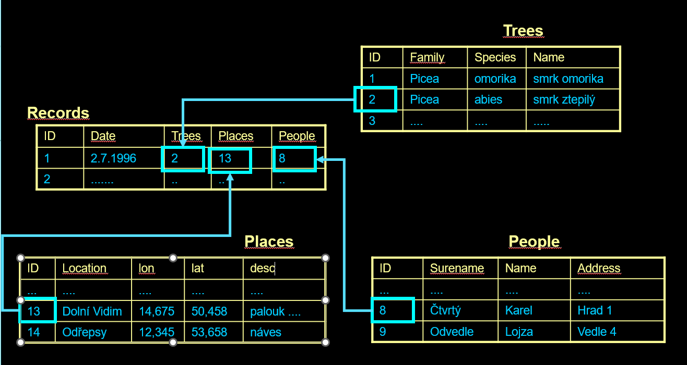

Database Systems - INFOA3 - ZS 25/26
EIE36E
Primary and foreign keys example. In each Record, ...
Tento soubor je součástí obsahu staženého z {$a->coursename} od {$a->userfullname} dne čtvrtek, 23. října 2025, 17.21. Všimněte si, že se obsah a některé soubory větší než 50 MB nestáhnou.
Popis
Primary and foreign keys example.
In each Record, I have foreign keys of Trees, Places and People. That allows me to identify the exact Tree, Place and Person that concerns that particular record.
For record identified by primary key value - 1 - The Record was made by "Karel" at "Dolní vidim" and he saw "Smrk ztepilý".
SQL query, that will select Record with ID value 1 and corresponding information from Trees, People and Places:
SELECT * FROM records, trees, people, places WHERE records.id=1 and records.trees=trees.id and records.places=places.id and records.people=people.id
